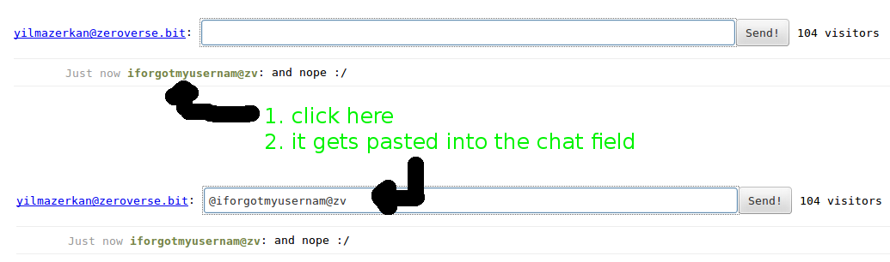
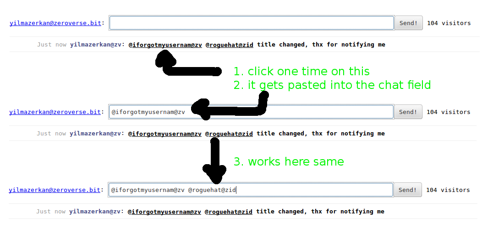
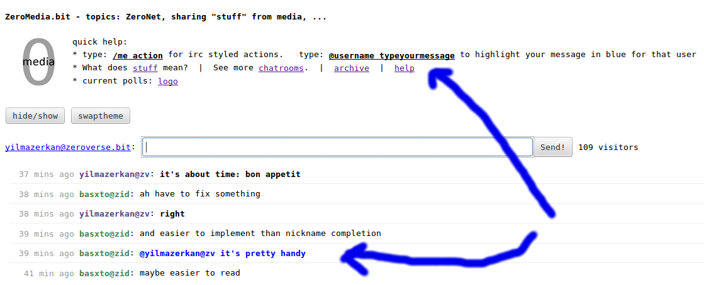
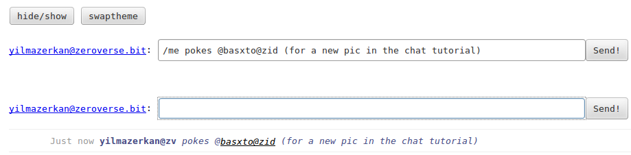
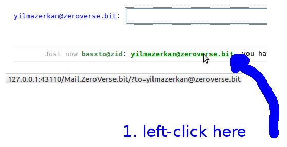
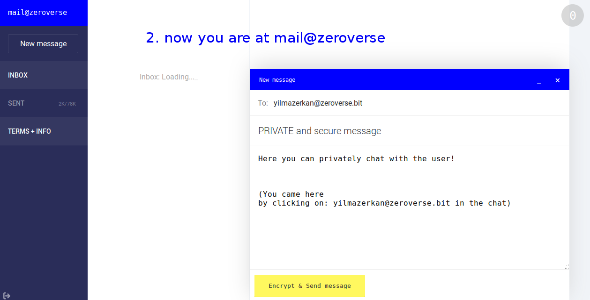

省时: 点击粘贴呢称
高亮消息
/me 指令
通过邮箱发送私信
省时: 点击粘贴呢称
图片示例：
点击用户名，名称直接粘贴到输入窗口，节省了时间


高亮消息
本人的信息是黑色，回复你的信息是蓝色

/me 指令
这个 /me 指令可以让消息以斜体字显示.
注意 /me 必须在文本开始处，如果 /me 在文本中间显示的依然是普通字体.

私人对话

必须点击用户名全称 (e.g. yilmazerkan@zeroverse.bit)
- 当用户名以聊天室简称形式出现时无效，比如 yilmazerkan@zid
聊天室里默认的ID简称如下:
- @zid (ZeroID)
- @zv (ZeroVerse)
